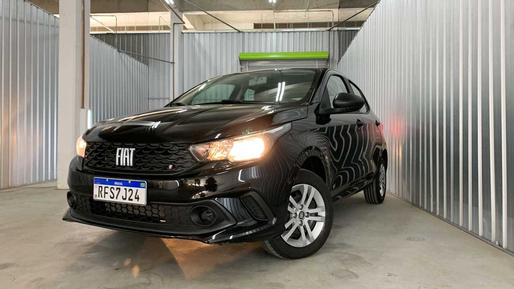
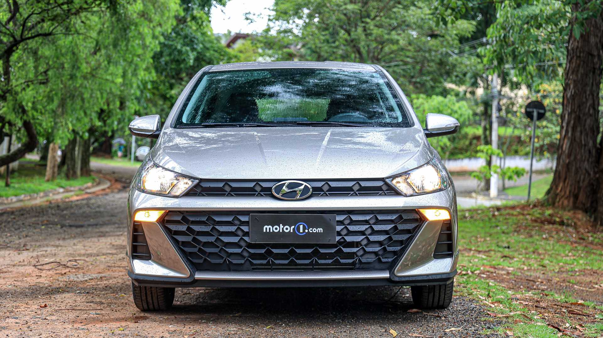
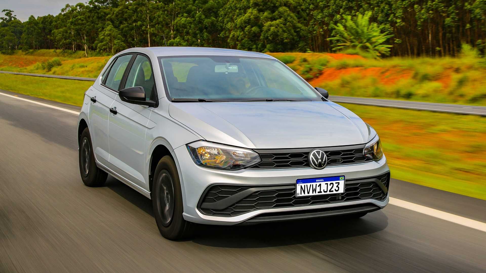
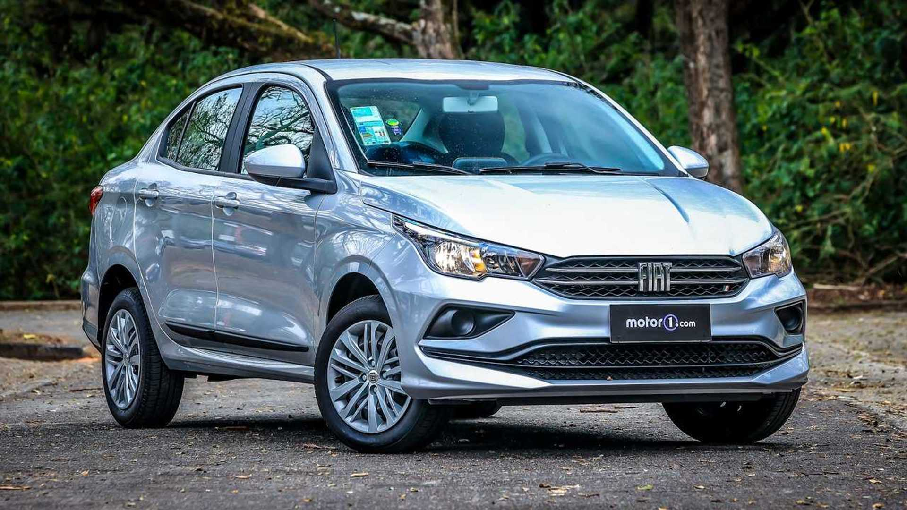
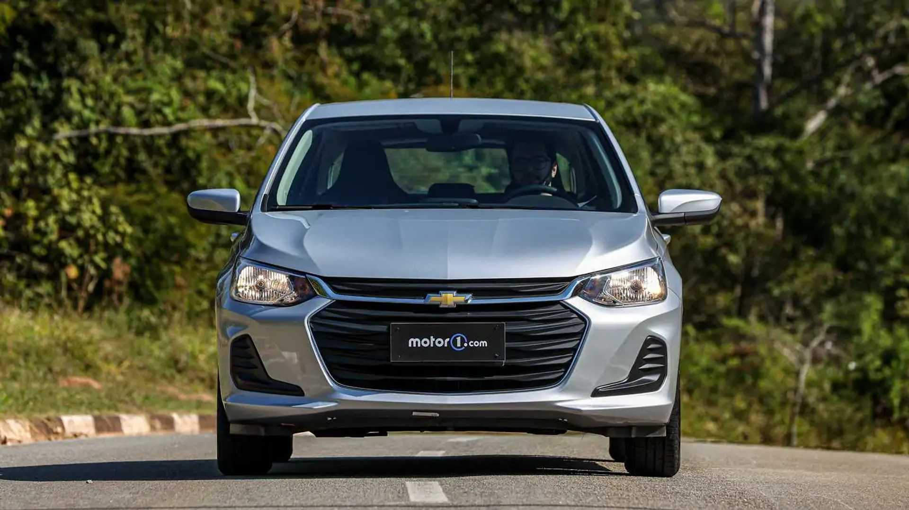

Carros mais baratos no Brasil
6° - Fiat Argo

-
Versão: Fiat Argo 1.0
-
Preço: R$ 79.790
-
Motor: 1.0 Firefly 6V
-
Câmbio: manual de 5 marchas
-
Potência e torque: 75 cv e 10,7 kgfm
A Fiat aparece de novo na lista, desta vez com o Argo. É maior e um pouco mais equipado que o Mobi, mas não muito, já que não recebe rádio ou vidros traseiros elétricos. Por outro lado, conta com ar-condicionado, direção elétirca, computador de bordo com display TFT de 3,5” e travas elétricas. Ao menos troca o 1.0 Fire pelo Firefly de três cilindros, gerando 75 cv e 10,7 kgfm, mas sempre com a transmissão manual de 5 marchas.
7º - Hyundai HB20

-
Versão: Hyundai HB20 Sense 1.0
-
Preço: R$ 82.290
-
Motor: 1.0 Kappa 12V
-
Câmbio: manual de 6 marchas
-
Potência e torque: 80 cv e 10,2 kgfm
O automóvel mais vendido de 2022 foi o Hyundai HB20, aproveitando a reestilização lançada no ano passado. Já foi mais barato, porém o preço subiu o suficiente para empurrado para o final da lista. A versão Sense vem com 6 airbags, ar-condicionado, direção elétrica, controles de estabilidade e tração, assistente de partida em rampas, vidros elétricos dianteiros, travas elétricas, computador de bordo com tela TFT de 3,5”, rádio com USB e Bluetooth, iluminação diurna em LED e mais. Segue equipado com o 1.0 Kappa 12V de três cilindros, que entrega 80 cv e 10,2 kgfm.
8º - Volkswagen Polo Track

- Versão: Volkswagen Polo Track 1.0
- Preço: R$ 81.370
- Motor: 1.0 MPI 12V
- Câmbio: manual de 5 marchas
- Potência e torque: 84 cv e 10,4 kgfm
O substituto do Gol é o Volkswagen Polo Track, uma versão com um design diferente do modelo reestilizado, feito para ser o primeiro carro de uma nova linha de entrada da marca. Para cumprir este papel, vem bem espartano, com quatro airbags, controle de estabilidade, assistente de partida em rampas, bloqueio eletrônico de diferencial, vidros dianteiros elétricos, direção elétrica, travas elétricas e ar-condicionado. Nada de rádio, que é um item opcional.
9° - Fiat Cronos

- Versão: Fiat Cronos 1.0
- Preço: R$ 84.790
- Motor: 1.0 Firefly 6V
- Câmbio: Manual de 5 marchas
- Potência e torque: 75 cv e 10,7 kgfm
O único carro da lista que não é um hatchback, o Fiat Cronos ganhou uma versão 1.0 para ocupar o espaço que foi do Grand Siena. É o sedã mais barato do Brasil, então não vem tão equipado quanto poderia. Tem ar-condicionado, direção elétrica, banco do motorista com ajuste de altura, preparação para rádio, alarme, rodas de aço de 14” com calotas, travas elétricas e vidros dianteiros elétricos. Como diz o nome da versão, o motor é o 1.0 Firefly de 75 cv e 10,7 kgfm que também está em Argo, C3 e 208.
10º - Chevrolet Onix

- Versão: Chevrolet Onix 1.0
- Preço: R$ 84.390
- Motor: 1.0 CSS Prime 12V
- Câmbio: Manual de 6 marchas
- Potência e torque: 82 cv e 10,6 kgfm
O Chevrolet Onix já foi o automóvel mais vendido no Brasil e agora está brigando com o HB20 para recuperar a posição, ainda tentando se recuperar do período sem ser produzido por causa da falta de peças e o fim da versão Joy. A lista de equipamenos conta com 6 airbags, ar-condicionado, assitente de partida em rampas, controles de estabilidade e tração, direção elétrica, rádio com USB e Bluetooth, rodas de aço de 14” com calotas, travas e vidros elétricos e computador de bordo. É uma das poucas versões com o 1.0 aspirado de três cilindros, com 82 cv e 10,6 kgfm, combinado ao câmbio manual de 6 marchas.